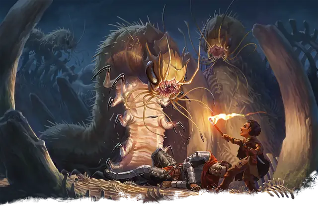

Ползающий падальщик
Carrion Crawler
Большое Чудовище, без мировоззрения

Класс Защиты 13 Инициатива +1 (11)
Хиты 51 (6к10 + 18)
Скорость 30 футов, Лазания 30 футов
| мод | спас | ||
|---|---|---|---|
| СИЛ | 14 | +2 | +2 |
| ЛОВ | 13 | +1 | +1 |
| ТЕЛ | 16 | +3 | +3 |
| мод | спас | ||
|---|---|---|---|
| ИНТ | 1 | −5 | −5 |
| МДР | 12 | +1 | +1 |
| ХАР | 5 | −3 | −3 |
Чувства Тёмное зрение 60 футов, пассивное Восприятие 15
Языки нет
Опасность 2 (450 опыта; БВ +2)
Особенности
Паучье лазание. Ползающий падальщик может лазать по сложным поверхностям, включая потолки, без совершения проверок характеристик.
Действия
Мультиатака. Ползающий падальщик использует Парализующие щупальца и совершает одну атаку Укусом.
Укус. Бросок рукопашной атаки: +4, досягаемость 5 фт. Попадание: 7 (2к4 + 2) Колющего урона плюс 3 (1к6) урона Ядом.
Парализующие щупальца. Спасбросок Телосложения: Сл 12, одно видимое падальщиком существо в 10 футах. Провал: Цель получает состояние Отравленный и повторяет спасбросок в конце каждого своего хода, при успехе оканчивая это состояние. Через 1 минуту цель автоматически преуспевает в спасброске. Пока цель Отравлена таким образом, она также Парализована.
Бонус мастерства +2
Среда обитания Город, Подземье
Сокровища Отсутствуют
Ползающий падальщик
Пожирающий мертвечину санитар подземелий
Ползающие падальщики — прожорливые трупоеды — тянутся к местам побоищ и разложения. В подобной могильной обстановке они пируют мёртвыми, ничуть не заботясь о происхождении или свежести трапезы.
Тела ползающих падальщиков сегментированы, словно у гигантских гусениц-совок. Из-под многосоставной пасти выступают восемь тонких хлёстких щупалец. Существа, задетые ими, рискуют быть парализованы и съедены.
Ползающие падальщики обшаривают сточные канавы, поля сражений, некрополи и зловонные пустоши. Они цепляются к потолкам, чтобы нападать из засады на добычу помельче и избегать конкурирующих охотников. Их привлекают свет и запах крови — они распознают в них признаки пищи. Глотать неорганические материалы эти трупоеды избегают.
Склепы с погребальными доспехами, из которых начисто высосаны тела, и жутковато чистые катакомбы — верные признаки заражения ползающими падальщиками.